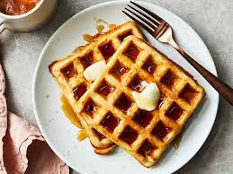

Waffles

Waffles Recipe
This is a recipe to make the best homemade waffles you have ever had in your entire life! Waffles are really good. This recipe is made with copious amounts of butter and butter-syrup and jam to make it delicious beyond comprehension!
Ingredients:
- Eggs
- Milk
- Waffle mix
- So much Butter TM
- Sugar
Steps:
- Mix dry ingredients
- Add wet ingredients and mix
- Pour out 1 cup at a time of the waffle mix into a waffle maker
- Leave in waffle maker for 3 minutes or until golden brown